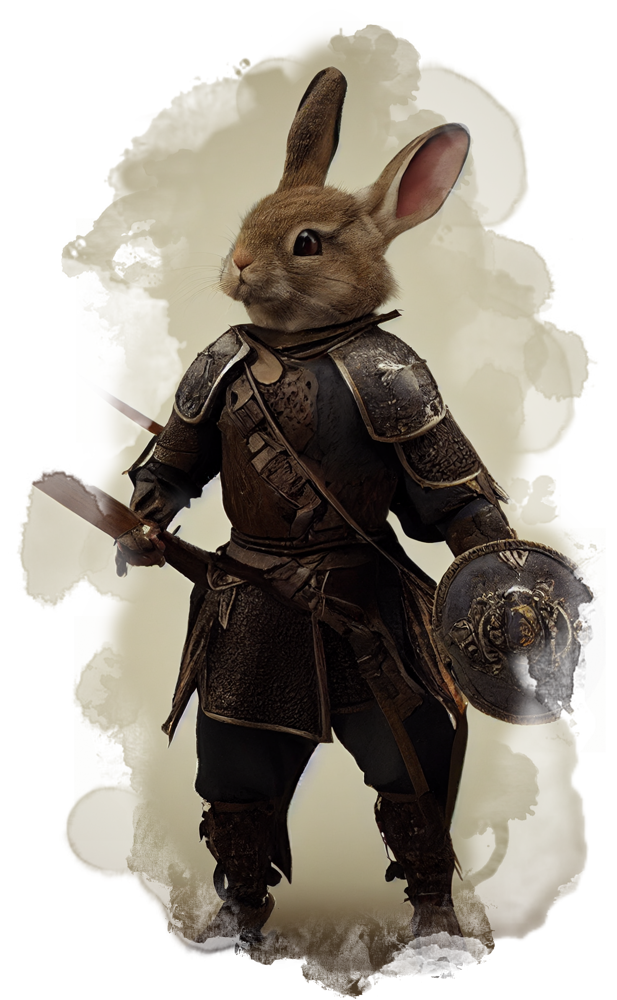
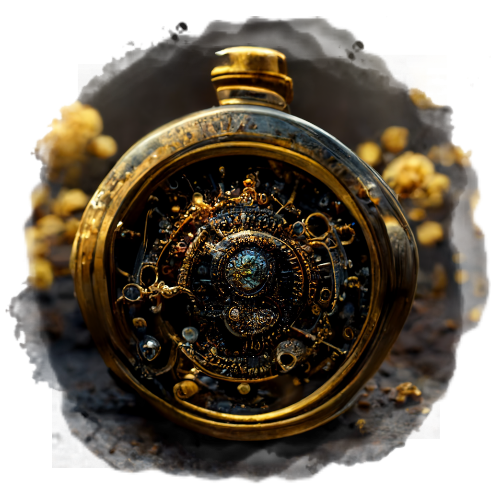
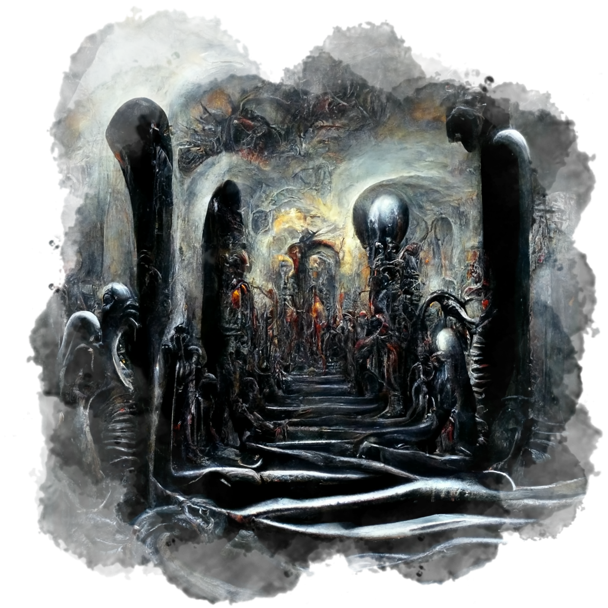
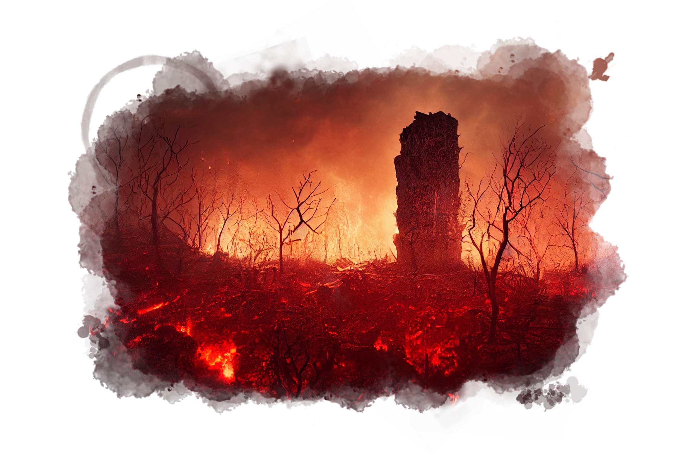

Call of the Inferno

Character Creation
Ability Scores
Characters are created according to the point buy system. Characters start with 38 points. Points can be spent improving ability scores, but the cost to improve a statistic increases substantially the higher it gets. See table below. Ability scores can also be reduced, giving players a small amount of additional character points to boost other statistics.
Race and feat based ability score bonuses apply *after* the point buy, and as such are "free" as far as points are concerned. However, a 1st level character may have a maximum ability score of 18 for any given statistic, inclusive of racial bonuses.
Each time a character gains an additional level, an additional ability score point is gained. This is in addition to any ability score improvement granted by the character's class progression and/or feats. Unspent ability score points may be saved for use at a later time.
Ability Score Cost
| Ability Score | Initial cost | Improvement Cost |
|---|---|---|
| 18 | 19 | n/a |
| 17 | 15 | 4 |
| 16 | 12 | 3 |
| 15 | 9 | 3 |
| 14 | 7 | 2 |
| 13 | 5 | 2 |
| 12 | 4 | 1 |
| 11 | 3 | 1 |
| 10 | 2 | 1 |
| 9 | 1 | 1 |
| 8 | 0 | 1 |
| 7 | -1 | 1 |
| 6 | -2 | 1 |
| 5 | -4 | 2 |
Unfortunately Grognak was not smart, cunning, or well liked and later died after mistaking a large stone for a potato. Had Grognak lasted until 3rd level he could have used those additional character points to improve his INT, WIS or CHA from a 5 to a 6, perhaps granting him the knowledge that the rock was not a potato, the common sense to not eat things you find on the ground, or the personality that would motivate people to assist him rather than point and laugh as he choked to an entirely avoidable death.
Alignment
Alignment is real and has actual in-game consequences. There are no innate disadvantages to any particular alignment, however managing your relationship with the other party members will be important. You can be disagreeable, but working together will generally be in your best interests.
Plane Alignment Boon
| Player Alignment | Plane Alignment | Alignment Boon |
|---|---|---|
| Lawful | Lawful | +1 |
| Lawful | Neutral | 0 |
| Lawful | Chaotic | -1 |
| Chaotic | Lawful | -1 |
| Chaotic | Neutral | 0 |
| Chaotic | Chaotic | +1 |
| Good | Good | +1 |
| Good | Neutral | 0 |
| Good | Evil | -1 |
| Evil | Good | -1 |
| Evil | Neutral | 0 |
| Evil | Evil | +1 |
| Neutral | Any | 0 |
Boons and Curses
| Alignment Boon | Effect Magnitude |
|---|---|
| +2 | 1d4 bonus |
| +1 | +1 bonus |
| 0 | No effect |
| -1 | -1 penalty |
| -2 | -1d4 penalty |
Character Level
As characters progress and their personal beliefs become stronger, so too do the effects. Effects at higher character levels must apply additional effects.| Player Level | Effect Type |
|---|---|
| 1st | Applies to all saving throws |
| 6th | Applies to all saving throws and ability checks |
| 11th | Applies to all saving throws, ability checks and attack rolls |
Madness
Sanity Points
Each character starts with 10 sanity points. Sanity points may be gained and lost during the course of the campaign. Lose too many and your character's mental state may be brought to the point where they are no longer functional beings, the mortal equivalent of death.Sanity Point Effects
| Points | Title | Effects |
|---|---|---|
| 0 | Lost | Permanent mental breakdown. Roll a new character |
| 2 | Psychotic | +1 on saves, disadvantage on skill checks, +2 to attack rolls. hidden curse |
| 4 | Demented | Disadvantage on skill checks. hidden curse |
| 6 | Certifiable | -1 to saves and skill checks. hidden curse |
| 8 | Disturbed | Insanity table roll for affliction. hidden curse |
| 10 | Uncertain | hidden curse |
| 12 | Clear of mind | Not afflicted |
| 14 | Free thinker | hidden boon |
| 16 | Mental Adept | hidden boon |
| 18 | Mind Master | hidden boon |
| 20 | Enlightened | hidden boon |
Sanity Checks
A character's ability to resist madness is based on their deepest, innermost, personal source of inner strength. For a warrior, this would be their usefulness in combat. For a wizard, this would be their intellect. For a bard person, this would be their ability to entertain. A sanity check comprises of an ability score check on the prime requisite of their character class. As prime requisite ability scores for character classes are ambiguous in D&D 5th Edition, a player may choose either of the saving throw proficiency ability scores for their 1st level class. Once chosen, this prime requisite for the purpose of making sanity checks is immutable for the remainder of the campaign. For example, a player creating a Fighter may choose either STR or CON as their prime requisite. A Cleric may choose WIS or CHA, etc. However, once chosen it cannot be changed later.The DM may require one or more characters to make a sanity check. The player should roll a 1d20, add their Proficiency Bonus, and the Ability Score modifier for their prime requisite. If the total is greater than or equal to the check DC, the character passes. If the character fails, they will lose one sanity point.
Regaining Sanity
Lost sanity points can be recovered via a number of means, including:Inspirational (or Dirty) Deeds
A character performing a exceptional deed strongly oriented toward their alignment. Such deeds should be of a creative and uncommon variety, and would typically involve some substantial cost or risk to the character. Successful completion of the deed helps the character reaffirm their self worth and ego, enabling them to regain some amount of control over their mental state.Inspiration Points
A character can gain a sanity point by expending their Inspiration. This only applys to DM awarded Inspiration and not other character derived forms.Affliction types
Upon dropping to a sufficient sanity level to aquire an affliction, the player should roll 1d20 to determine what the affliction is. Players are expected to role play the affliction appropriately, starting with mild symptoms, and getting progressively worse as their sanity decreases.| d20 | Afflication |
|---|---|
| 1 | Dipsomania - the compulsion to drink alcohol |
| 2 | Kleptomania - the compulsion to steal |
| 3 | Schizoid - loss of personality |
| 4 | Pathological liar - compulsion to lie |
| 5 | Monomania - singular obsession |
| 6 | Dementia Praecox - extreme disinterest in doing anything at all |
| 7 | Melancholia - extreme feeling of hopelessness |
| 8 | Megalomania - person is convinced that they are the best at everything |
| 9 | Delusional Insanity - individual is convinced that they are some important persona such as a famous person or royalty |
| 10 | Schizophrenia - split personalities |
| 11 | Mania - temporary state where the individual becomes hysterical and irrational and can become incredibly strong and sometimes violent |
| 12 | Lunacy - homicidal compulsion that manifests itself on or about a full moon |
| 13 | Paranoia - person is convinced that everyone is out to get them |
| 14 | Manic Depressive - person swings between two different forms of insanity |
| 15 | Hallucinatory Insanity - afflicted sees or hears things which do not exist |
| 16 | Sado Masochism - the individual may have swings between two different conditions. at one extreme they wish to inflict pain on others. At the other extreme they wish to suffer pain |
| 17 | Homicidal Mania - compulsion to kill |
| 18 | Hebephrenia - disorganized behavior and speech, strange or inappropriate responses |
| 19 | Suicidal Mania - compulsion to kill self |
| 20 | Catatonia - abnormal movements and behaviors, immobility, and withdrawal |
Curing Afflictions
The only way to permanently cure an affliction is to raise your sanity points back above the level at which the affliction was obtained. If the character's points drop below that level again, a new affliction is acquired and the player must re-roll on the affliction table.
Players may use magical healing to temporarily raise their sanity points back to at most a value of 10. Example spells which may help with this include Calm Emotions, Lesser Restoration, Greater Restoration, and Heal.
Death
The characters are bound into the service of the infernal plane. As such, when reduced to zero hit points, the character does not fall unconcious, but is transported back to the Nine Hells. This is an extremely traumatic and jarring experience to a character's psyche, and as such there are consequences to this. A character "killed" in this manner must make a sanity check or lose a sanity point upon returning to Hell.After having returned to Hell, the character may choose to wait for the other party members to return, or seek a way to rejoin the party based on the circumstances.
Resisting Death
The player may choose to resist returning after being reduced to zero hit points. For each round the player must make a sanity check. On a successful check, the character remains as a Vengeful Spirit that can still participate in an unresolved conflict. On a failed sanity check, the character will return to Hell as above, but will suffer an additional sanity point loss.The stats and powers of the Vengeful Spirit will depend on the character's alignment, and will be revealed upon this condition occurring.
Character Race
Most campaigns take place on the prime material plane, where there is a fantastic multitude of available player races to play from the now standard elves, dwarves, and hobbits and other staples of classic fantasy fiction, to exotic minotaurs, lizard men, and demonspawn. Yet this pales in comparison to the mind bending variety of possible player character races on the planes such as Genasi, Gith, Formians, and many more. In this campaign, players will be able to create characters from any reasonable race, and maybe just some unreasonable ones! Players can work with the DM to create a novel race around a particular idea to provide a memorable but balanced playable race concept. The only type of being off-limits are those native to the Nine Hells. Note that this does not include Tieflings, as they are native to the prime material plane.
TBD
Monsters
As the campaign progresses, the player characters will encounter exotic never before seen creatures. Many of these creatures may be benign or even beneficial, most will be hostile, and some will test the very limits of the characters psyche. Significant monster categories will be documented here for reference, revealed after being encountered.TBD

Magic Items
Magic pervades the very essence of the planes. Very often magic is captured into a physical form, perhaps by a deranged wizard for later use to gain an advantage over enemies or to achieve a greater goal, perhaps as a failed experiment tested and then later discarded by a lost and forgotten god, perhaps even formed naturally via a rare confluence of the elements and forces of the universe. In any case, magic items add great power to the player characters, and are prolific throughout the planes. The biggest question is where to find them, and how to liberate them from their owners without getting killed in the process... Significant magical items will be documented here for reference, revealed after being encountered.Fractum Ostium
 TBDPlayer Characters
The Broken Man - A tragic origin
As played by Ben Pancoast
I grew up in my family's estate with my aging aunt and uncle, their son, my cousin. My parents had left for a far-off realm to resolve an ancient dispute with another wealthy family.
I was always an academic, bookish type. I spent my childhood looking at the tomes and scrolls and parchments, paintings and drawings, and obscure artefacts that lined the estate's shelves and walls, handed down through my family over ages. As I grew, and my aunt and uncle succumbed to their age, I perused the estate's collection with ever-growing scholarly curiosity. In time, I would devote my life to doing avid research, learning ancient tongues and seeking lost pages and relics, with a remarkable affinity for convincing erstwhile collectors of similar relics and writings to share them with me, sometimes even to keep.
I studied, and I learned. But I never really believed in any of it.
Meanwhile, my cousin was enjoying the best of life. With extraordinary popularity and easy charm, he hosted grand parties with guests influential, mysterious, or both. At court and in the merchant halls, he was content to squander the family's wealth on revelry, failing trades and shaky land deals. He would routinely ridicule and deride me, teasing "are you sniffing in those dusty scrolls again, cousin?"
But behind his guise of irresponsible playboy, he believed all of it. And he never let on. His understanding of the importance and value of the tomes and artefacts surpassed mine, and in truth, his apparently shaky deals secretly advanced a dark agenda. But he lacked the discipline and scholarship to comprehend the most arcane of family's eldritch treasures. I could comprehend the storied arcana, but I did not understand. I did not or would not see. This blindness would become my undoing.
Eventually, my cousin pretended to take a passing interest in my studies. Feigning disinterest, he elicited, "Tell me what the big deal is with all these, with all of this. You've wasted so much of your life on them."
"Start with, um... Oh, how about that one?"
And so one day, I shared, and I began to read aloud. And to demonstrate.
But though I believed I was academically explaining the tomes and scrolls, I was unwittingly working through dark, arcane rituals. My cousin's interest wasn't feigned at all, and his cohort of fellow believers were hiding nearby in our estate, an estate purpose-built, which concealed chambers and sigils for just such an occasion. And so, my fall:
I finally reach the end of the recitation, and my cousin asks, "So, now what happens?"
And I answer, "well according to the text, there would need to be some sort of betrayal and sacrifice. Whatever that means."
"I think it means this, cousin," he sneers.
And he looks into my eyes as he plunges an accursed dagger into my heart.
As the light begins to fade from my eyes, and the forces of evil cackle with glee at their newest sacrifice, I find determination enough to choke out "You knew? You knew all along??? Why? Why cousin?!?"
"You see, cousin, a trade must be made to summon power here. Thank you. Truly."
A portal to Hell begins to open, and the ritual continues that will allow a devil-spawn to take my place in the mortal realm, as I take its place in Hell.
This final ritual, a missing link written on an ancient scroll kept hidden from me for all these past years, requires the creation of a Hellish torment in the mortal realm. And so I am wrenched back to consciousness and made to suffer through unknowable hours of Hell-worthy torture: skin is flayed from my flesh, flesh carved from my limbs, limbs torn from my body. When at last the torment is adequate, and the portal is stable enough for the transfer, the cursed dagger that trapped me in near-death during my agony is withdrawn from my heart and drawn across my throat.
And as I fade from consciousness, with the last remaining drops of my lifeblood spattering into the sigils on the floor, I gurgle "Gods forgive me; what have I done!? Someone, something, please, spare me this fate, and give me a chance to right this wrong..."
Fatally betrayed by my own kin, I feel myself hurtling down toward eternal damnation, pummeled by debris and fragments of the ritual chamber and its furnishings that were drawn through the gaping portal with me.
Passing through plane after plane of different overlapping realities, I approach my destination, and I plummet toward a sea of tortured agonized souls, their screams in eternal pain reaching up toward me, joining my choked bleats of terror. What little remains of my body starts to disincorporate, tattered remnants of flesh and bone sear away as my fall approaches its end.
And then something answers.
The unseen presence of some vast cosmic power says deeply in my mind "very well, mortal."
As the sound of the voice trails off, darkness rises around me, muffling the cries from Hell below. The shards and remnants from the ritual chamber start to stick to what remains of my shattered corpse. There is a moment of intense, wrenching vertigo. And then all is darkness.
Bandito - Gransalto's Story
As played by Chris Johnson
Born into a large Harengon family living on the outskirts of Waterdeep, this bunny-kin was the runt of the litter. Interestingly, his leap was greater than the rest of hte litter, earning him the name Gransalto ("Big Leap"). One day, when he was still very young, a group of thugs working for Xanathar, the infamous beholder who controlled much of the criminal underworld of Waterdeep, raided Gransalto's home and kidnapped him. The carnage of the harengon was abominable. They tormented and burned the homes of the harengon, and raided and took anything of value. Curiously, one of the bandits found poor Gransalto attempting to hide in a small nook in a cave. Upon being discovered, Gransalto leaped his biggest leap, and attempted to escape, but the raiders were too many, and ultimately, he was captured in a bag, to be brought back to Xanathar as a gift for his entertainment.
Gransalto was forced to perform dangerous stunts to entertain Xanathar. And eventually, as Gransalto earned some level of trust with his captors, and worked to earn his way to more valuable tasks, they gave him jobs of thievery and message delivery, and even more unsavory tasks by some of Xanathar's criminal associates. Over time, he became more skilled in these unsavory arts and was even given the nickname "Bandito" by Xanathar, which they all began calling him. Unfortunately it started as a gag, teasing him with the sing-songy sound of his given nickname of his parents, but ultimately, it gave him purpose, and helped him fit in... so he went with it.
Despite being forced into a life of crime and servitude, Bandito never forgot his desire for freedom and a better life. He secretly worked on perfecting his thievery and sword and dagger skills, hoping to one day steal enough to escape and fight for freedom to live a peaceful life. As Bandito grew older and proved himself harmless to Xanathar, he became increasingly trusted by him and was given more dangerous tasks to perform. He despised the life he was living but knew he had to continue to do what it took to survive and one day earn his freedom.
One fateful evening, Xanathar, in an effort to keep his friends close, and enemies closer, invited all the major crime bosses in Waterdeep for a poker game. Manshoon, the most powerful crime boss other than Xanathar was a particularly special and important guest. Xanathar guild and Manshoon guild had been in a careful stalemate, but Xanathar had a plan to usurp his power in the midst of this poker game, and rob Manshoon while keeping him occupied with the poker game. The tensions and stakes continued to rise until Manshoon pressed Xanathar for a raise which he could not back away from, and put in a commitment chip, indicating his loyalty to Manshoon. The room went quiet. Could this be the Xanathar offering a partnership with Manshoon? How could he possibly open himself up to be subservient to Manshoon!? When the cards landed, and it appeared Xanathar lost, it was revealed that it was not, in fact, the Xanathar commitment chip, but Bandito's commitment chip he had put in. Manshoon smiled evilly, having become aware of the emerging strength of life Bandito represented, and knew this would satisfy his Patron. Manshoon smirked at the Xanathar, thanking him for his offering, and reminding him that Manshoon sees all, and that the attempted robbery was thwarted, reminding Xanathar of his weaknesses and Manshoon’s strength. With a smirk, Manshoon spins on his heels, grabs Bandito, and saunters out of the room.
The discovery of Manshoon’s trickery infuriated Xanathar - which is something Bandito had seen before, but this dance had been carefully orchestrated, and to lose to Manshoon at this point would surely have left Xanathar in a fury like no other. Bandito watched the ritual knife thrust down into his chest, and wondered if this change would present him in some way, a new way to find his freedom and a better life…
Verthandi - A finder's tale
As played by Chris Sweitzer
Fenrir the Finder stumbled out of the hospital on uneasy legs. Bile rose up in his throat, forcing him to stop to steady himself despite his desire to get away as quickly as possible. He had never seen such a monstrosity before, but that wasn’t even the worst part. It spoke. And what it told him frightened him more than anything he had ever experienced before in his life.
Fenrir found people. He was very good at his trade, having found a total of sixty-three people so far out of a total of sixty-four attempts. That one failure, early in his career, used to bother him, but no longer. It was that failure, and the elimination of his perfect record, that drove him to accept more chancy, and therefore more lucrative, opportunities, and he hadn’t messed one up yet.
Usually the person he was looking for was simply in hiding from whomever was seeking them. A little legwork, a few spells, and he could verify and deliver the location of the absconder to his employer. This one, however, was different. He knew that from the beginning. He should have turned it down. He would have, had he stopped worrying about his unbroken streak. There had been similar offers in the past that he had rejected, before his failure. Even afterwards there were some jobs that he knew were impossible, or that he knew would end up with the person he found murdered by the person seeking them, that he declined to take.
It was the druids. That’s why he took it. His one failure had been when he was looking for a druid. And now he was doing it again, trying to find a druid. And not just any druid, but the second highest ranking druid in the Druidic Circle of Infinite Rainbows, the most well known group of druids in the entire region. Druids have a reputation of being wool-headed, thinking about butterflies and flowers, but he knew better. Nature was as cutthroat as any back alley gambling den.
The job had started innocently enough. He received a request to find Kenrik the Many, who was known for his ability to take the form of a staggering number of animals, from the Hierophant himself. Kenrik was the Hierophant’s right hand man. He was the one who did most of the work, while the Hierophant contemplated humanity’s place in nature, or so the lower ranks of the circle suggested.
Not that he actually met the Hierophant. He wasn’t nearly important enough. He had met with some rank and file druid by the name of Tumeric at Kenrik’s home at the compound that housed the high-ranking druids of the Circle of Infinite Rainbows, which was the last place the errant druid had been seen some six weeks earlier. Of course it wasn’t strange for someone with the responsibilities of running the day-to-day operations of the circle to be away for months at a time, but he had been expected to meet with the Hierophant for their yearly conference on the state of the circle a week earlier and yet was nowhere to be found. Attempts to communicate magically to Kenrik had failed, attempts to magically locate Kenrik had failed, and now the Hierophant wanted to know where his second had gone off to and why.
Walking into Kenrik’s home was the first warning sign. Fenrir had the uncanny ability to walk into a place and immediately know what was important and what was superfluous. There were differences between the home of someone who had been kidnapped and someone who had fled. But Kenrik’s abode had neither. There were no signs of struggle. There were also no signs of someone who had left of their own accord. There was absolutely nothing. Actually, it was worse than that. The entire home looked staged. All homes, whether lived in or not, have something out of place. They have something askew or missing. This place was perfect. Everything was where it should be. Everything looked completely normal. It was disconcerting to Fenrir. He should have thanked Tumeric and left right then, but he didn’t, and truth be told, it was because he was afraid what people would say if he failed to find a second druid. “Don’t hire Fenrir to find druids,” people would say. He knew it was silly, but then, people were fickle, and finding people was his livelihood.
Since Kenrik’s house provided no clues, and magical means turned up nothing (not that Fenrir didn’t try, even though the druids had already done much more than he could muster),he consigned himself to doing the job the hard way. In order to find out where Kenrik had gone, he had to find out where he had been. Kenrik travelled all around the region to visit with the various druids of the circle. And so Fenrir did the same. And that’s where the job went from disconcerting to disquieting. None of the druids had met with Kenrik lately. Some of them hadn’t seen him in five years. Some hadn’t seen him in eight. Some had never met him at all, but only remembered his predecessor. It didn’t seem possible or plausible. How could Kenrik had met with the Hierophant every year and told him what the circle was doing if he wasn’t meeting with the circle’s members? What exactly was Kenrik doing when he travelled around the area if he wasn’t meeting with members? Where was he going?
Since Kenrik wasn’t going to where druids were, he had to be going where they weren’t. Druids spent most of their time in nature. They lived in forests, in swamps, high on mountaintops, or deep In valleys. They didn’t live in cities. So that is where Fenrir went. He thought it was a long shot. After all, why would a druid go to a city? But he immediately found that’s exactly where Kenrik had gone. And not just one city, but every city. Every place where more than a few people gathered and lived together he found that Kenrik had visited. And now the job wasn’t disquieting anymore. In fact, it screamed at him to get out and run away as fast as possible. But it was too late. He had spent too much time, and too much money, to give up. And the job had its hooks into him now. He had to find out what Kenrik was doing, and the only way to do that was to find him and ask.
Kenrik had been meeting with every magical guild in every major city in the region. It wasn’t just some of them. It wasn’t even most of them. It was all of them. As the second ranking member of the most powerful druid circle, they all had no problem opening their doors to him. And what harm could it do? He was just a druid.
It appeared, at first glance, that he was just doing research into druidic matters. Every magical guild and group had their libraries and archives, and Kenrik would spend time in each. Most kept track of which books and papers the druid looked at in order to make sure that if he found anything of interest, they would know where it was he had been looking.
It was all books about nature and herbs and animals. Exactly what one would expect from a druid. There was nothing out of ordinary about the books, except that every single one was one that Fenrir had seen before. He had seen them in a very specific place. He had seen them in the home of Kenrik. Kenrik was doing research in books that he already owned. It made no sense. Only, it did to Fenrir. Kenrik was looking for something specific, but needed to hide what he was looking for. So he spent time looking at books he had already read to mask what he was really looking for. And what he was looking for wasn’t a book, but a place.
At first he thought every book was one Kenrik already owned, but after traveling back to Kenrik’s home to check, he found that wasn’t the case. There was one book that showed up in the list that wasn’t in Kenrik’s home library. It wasn’t anything special. It was simply called “The Healing of Curses.” It wasn’t even a rare book. He found a copy in his home city and read it cover to cover. There was nothing in it that was particularly novel or eye-opening. But Fenrir knew there had to be something about that book. Kenrik must have been trying to figure out how to lift some kind of curse, but if so, the contents of that particular book would not have been much help. It was rudimentary. Any hedge wizard or cleric could probably do everything described in the book. Even Kenrik probably knew more about healing.
If it wasn’t the contents of the book, Fenrir thought, it had to be the origin. The book was written by a cleric, of course, who resided at a hospital that specialized in difficult to cure magical diseases. Fenrir had actually heard of it. It was situated in a remote region away from any major city, which made sense. People worry about diseases from such places getting into densely populated areas, and they had to be built where few people lived. There was a nearby town, of course, but it didn’t even have a hundred people in it.
And so Fenrir decided to travel to this town and the hospital that had been built on its outskirts to find anything about the druid he had now spent several months looking for. The town itself was nothing special. He stayed at the only inn. Everyone was very nice. No one remembered seeing a druid showing up in the past half year, but then, he didn’t expect that they would. The hospital looked exactly as he expected. It was a big imposing building with few windows, but a pleasant demeanor. And with every step he took up the main steps, he felt his gut tighten. He felt the same feeling he felt when first looking at Kenrik’s home. He walked inside and was met by a kind young priest who asked him what ailment he was afflicted by and how they could help. When he explained who it was he was looking for, expecting either a denial of their existence or at least refusal to acknowledge their admittance, he was surprised by the young man’s response. It was sadness. Kenrik was there. In that very hospital. But they had, so far, been unable to help him. Somehow Fenrir expected it to be harder. And when he asked to see him, the priest readily agreed to take him. In hindsight, he should have known something was wrong.
Most druids, apart from the most remedial, can turn into animals. Kenrik was the foremost expert at doing so, except maybe for the Hierophant himself, although he never appeared in public anymore, so no one really could compare the two. The creature that lived in Kenrik’s hospital room appeared to be made from every beast that Kenrik could transform into. It wasn’t just a chimera, made of a few different animals, but a gestalt of nature. Every limb, of which a dozen sprouted from Kenrik’s torso, was made from several, if not hundreds of different creatures. Scales and feathers sprouted like wild grass from every exposed piece of skin. Talons and claws and hands and paws grasped and clasped, ripping and tearing at itself in a grotesque menagerie. The torso was still human, but heaved and groaned with animal faces covering it, all moaning and screaming, but without sound. In fact the whole room was deathly silent except for the scraping of skin as a nail or claw scratched against skin, opening new wounds on top of half-healed old ones.
And there was blood everything. The priests had obviously tried to keep the druid clean, but the constant scratching and biting and thrashing caused a constant spray of blood that covered every nearby surface in the room. No doubt some of the blood was from the priests who got too close and accidentally slashed by a flailing arm or leg. And despite all of this. Despite all the horror of Kenrik’s body, what truly disturbed Fenrir the most was its head. He had been given a portrait of Kenrik, so he knew what he looked like. And there was no doubt that the head upon this creature was that of Kenrik’s. But where one would expect to see a visage of pain and horror, was one of quiet contemplation. Despite the seething limbs and gnashing faces covering his body, Kenrik looked as serene as if he was sitting by a river enjoying a light breeze off the water. And as Fenrir approached, his eyes opened and he looked at Fenrir and he said, “Hello Fenrir. Good to see you.”
Fenrir went back to his room at the inn after leaving the hospital. He must have, since that’s where he found himself, although had few memories of his walk back from the hospital. He was still having a hard time processing what Kenrik had told him.
“I knew you would find me,” Kenrik had said, as calmly as if he was discussing the weather.
“How?” Croaked Fenrir.
“Who else would he send to find me? You are the best at what you do.” Kenrik had explained.
“What do you mean?” Asked Fenrir. “Who do you think sent me?”
“The Hierophant, of course.” And for the first time, Fenrir saw emotion pass over Kenrik’s face. A look of disgust and fear appeared, but only for an instant. Most of would missed it, but Fenrir missed very little, even in his current state.
“Well, yes,” Fenrir explained. “He did send me, although I never actually met with him.”
“Better that you hadn’t. Very few meet with the Hierophant and emerge unchanged, as you can see by my current predicament.” Fenrir was stunned. Kenrik’s curse, and that’s what it had to be for him to be here, was caused by the Hierophant? Continuing, Kenrik said “That is how he keeps us in line. It’s how he keeps us from betraying his secret.”
“His secret?” Fenrir was perplexed. What was Kenrik talking about?
“Yes, his secret. And now that you’re here, I can reveal his secret, and finally be cured of this curse, or die in the attempt. You can go back and reveal it and the Hierophant’s reign of horror will finally be at an end.”
The attempt to remove Kenrik’s curse was scheduled for midnight that very night. But Fenrir had no plans to stick around for it. He wasn’t even going to be in town by that time. He wanted to get as far away from the hospital and the Hierophant as possible. The secret Kenrik had spoken to him had been very simple, but it had chilled Fenrir to his very core.
“The Hierophant is a mind flayer.”
Fenrir was no hero. He was no adventurer who slew monsters by the dozen. He had heard of the Nine, who had killed a mind flayer almost as an aside while also slaughtering two dragons and a dozen dark dwarves and their allies, but to him, the Illithid were creatures of nightmares who would suck out your mind and leave you a husk. He had to get away. He had to escape this place before the Hierophant found out where he had gone. But it was already too late.
“Hello Fenrir,” a new voice said from behind him. “Good to see you.”
The next morning a maid screamed after she opened the door to Fenrir’s room and found him sitting in a chair, a smiling grimace on his face, the top of his skull removed, and nothing but emptiness inside his head.
Verthandi, better known as the Hierophant, headed quickly towards the hospital where Kenrik was. He had consumed Fenrir’s thoughts, and his brain, so he knew Fenrir hadn’t had the opportunity to tell anyone his secret, but if these priests managed to cure Kenrik of the curse Verthandi had laid upon him, then he could still reveal it to everyone else in the circle, and Verthandi would be ruined. It had taken decades to subvert and take over the circle, and now, just as he was about ready to have his improved beasts, Verthandi refused to call them aberrations like other did, supplant the generic creatures of this world, he couldn’t lose his most powerful tool. Kenrik had to die, as did the priests of the hospital where he lay.
Fenrir’s thoughts still swirled through Verthandi’s head, as always happened after a meal. He was impressed by the young man. He had been observant and quick witted. Very few would have found Kenrik’s hiding place. And even fewer would have seen it for what it really was.
That’s an odd thought, pondered Verthandi. He was through the front doors of the hospital by now, tearing apart the priests who attempted to stop him. He also consumed their brains, but they were simpletons. What had Fenrir seen that so disturbed him?
More priests appeared, only to fall to Verthandi. He arrived at Kenrik’s room, but they had already moved him. Thanks to the informed gleamed by the minds of the priests Verthandi had consumed, he already knew they had taken him to a chamber beneath the hospital, where the true work was done.
True work? Verthandi thought. The removal of curses was their work. Why am I thinking about their true work? It was Fenrir, he realized. Fenrir had seen this place, and it had disturbed him. It wasn’t Kenrik’s appearance or even Verthandi’s secret that had so unnerved the man. It was this hospital. Maybe not on a conscious level, but there was something about this hospital that was wrong. It wasn’t a place a healing. It was something else. It was a place of suffering. Verthandi burst into a large chamber. Kenrik was strapped to a table in the middle, surrounded by thirteen priests.
“Hello Verthandi. It’s good to see you.”
Kenrik had sold his soul. And he did so gladly, to protect his circle, and the world, from the alien horror that the Illithid who had supplanted the previous Hierophant represented. The priests of this hospital—he laughed. It was no more a hospital than the Hierophant’s aberrations were “improved beasts.” These priests were devil worshippers, or maybe even devils themselves. And now they had what they wanted. One of the most powerful druids in the world. Not him, of course. He was powerful indeed, but he offered them something greater. An Illithid druid. A hierophant. And not just its soul, but its entire being. Sure, he would die, and spend eternity in torment, but it was worth it to protect that which he loved.
“He almost figured it out,” said Verthandi. “He saw what this hospital really was, and who these priests were.” The priests had shifted their spell from Kenrik to Verthandi by now. He could feel the magical cords tightening around his body.
“I know,” replied Kenrik. “He would have figured it out much earlier had I not weakened his judgement a little.” The ground began to crack. Fissures appeared around Verthandi.
“Oh? How did you do that?” Verthandi asked. The fissures opened up, steam rising from the depths below.
“A decade ago I sent him to find another druid. One that disappeared after meeting with the Hierophant. Of course I knew he’d never find him.”
“I don’t remember meeting with a druid that disappeared.” A loud crack sounded, and the floor of the chamber began to fall away in pieces.
“Of course not, you weren’t the Hierophant at the time.” Kenrik laughed. “You were the druid who disappeared.” Verthandi remembered now. That was the day he had eaten the brain of the previous Hierophant and taken his place. Beneath him, a portal was opening up. He could see into its depths. The ground beneath his feet gave away and he plummeting downwards. The last thing he heard was Kenrik’s voice. “Goodbye Verthandi. It was good to see you one final time.”
Kenrik left the ruins of the hospital on two normal feet. Apparently the curse had not survived Verthandi’s demise. The devil worshippers were surprisingly fair about the exchange. They let him keep his life. They still had a claim on his soul, but he could surely work something out. Perhaps trade a few other souls for his. Kenrik shuddered. What was he thinking? He had to get back to the circle. He had to find more sacrifices for the devils below. Young Tumeric would be perfect.
Oh no, thought Kenrik. The new Hierophant, however, smiled.
Crokiak - The Shaper
As played by Dave Feldman
Crokiak had always been fascinated with the workings of machines and gadgets. As a young Githzerai, he spent countless hours tinkering with clockwork devices and exploring the mysteries of magic. However, his fidgety nature and constant tinkering were not well-received by his monastic comrades. They viewed his preoccupation with machines as a distraction from their meditative practices and shunned him for his lack of focus.
Despite their disdain, Crokiak persisted in his tinkering and eventually found a place of refuge in the monastery library. As the librarian, he spent his days surrounded by books, maps, and ancient tomes filled with the knowledge of generations of Githzerai scholars.
After years of being shunned by his fellow Githzerai monks, Crokiak left the library and sought solace and purpose in the Plane of Mechanus, where he spent several years deepening his understanding of machines and constructs. The Modrons of Mechanus were initially skeptical of his tinkering, but they soon came to respect Crokiak's ingenuity and his unique perspective on the intricate workings of the multiverse.
Under their tutelage, Crokiak delved deeper into the arcane mysteries of machines and constructs, studying ancient tomes and experimenting with new designs. He developed a particular fascination with the Clockwork Nirvana of Mechanus, a massive machine that powered the entire plane and maintained its perfect order. As he worked, Crokiak's mind became sharper and more focused than ever before. He developed an encyclopedic knowledge of mechanical devices and magical constructs, and he honed his skills in crafting intricate clockwork devices.
After a harrowing experience working on a project in the Modron Catherdal in Regulus in which he barely escaped with his life, Crokiak returned to the monastery in Limbo to add his knowledge to library where he first discovered his love of machines. One day, while lost in thought among the stacks of books, Crokiak overheard one of the head monks talking in hushed tones about a forbidden spell. The monk spoke of a powerful incantation that could resurrect the ancient dragon god Null and restore the glory of the Githzerai empire.
Crokiak knew that such dark magic was strictly forbidden and could have catastrophic consequences. He resolved to confront the head monk and convince him to abandon his dangerous quest. But before Crokiak could act, the head monk absconded with the forbidden tome, disappearing into the monastery's inner sanctum. Fearing the worst, Crokiak decided to follow him and retrieve the book before it was too late.
As he crept through the darkened corridors of the inner sanctum, Crokiak heard the head monk chanting the forbidden spell. In a moment of panic, Crokiak stumbled into the room, unwittingly triggering the completion of the spell. With a blinding flash of light, Crokiak was hurled through space and time, his body ripped apart by the raw power of the spell. When he awoke, he found himself in a place of torment and suffering, surrounded by demons and devils.
Crokiak had unknowingly damned his soul to Hell, and there was no escape. Trapped in this infernal realm, Crokiak vowed to use his knowledge of machines and magic to find a way out and seek revenge against the monk that had betrayed Crokiak and his people
Feuriel - The Fallen Angel
As played by Jason Pancoast
She remembers nothing of her angelic existence, apart from the feeling of boundless joy and eternal peace in all things. And she remembers the following:
The archangel Xandriel stood before her, surrounded by choirs and hosts of angels. He continued speaking,”...thou shalt hereafter be called Feuriel, and thou art hereby cast from Heaven---”
At the instant the last syllable was uttered, the pain began, and it never stopped. Joy and peace were ripped from her, and physical pain accompanied it. She felt a vertigo, as if she was falling, though she could see nothing but blinding white light, which hurt also.
She felt the pain of death, 666 times, as she passed through the mortal world repeatedly, still blinded but seeing only a dismal shade of gray. She felt again and again the futile agony of humanity. She remembers thinking, “So this is why they are as they are.”
This was just the beginning of her journey, for the meaningless gray began to deepen into an ominous darkness. Deeper and deeper she fell, the trauma increasing. She felt her body burning, her wings being seared off, only to be reformed and destroyed again. Over and over, deeper and deeper, into the eternal suffering that is Hell.
As an immortal being, she does not perceive time, so it can’t be said how long the fall lasted. But it had a beginning, and an end. The end, is in pure darkness, tangible evil.
She can feel herself surrounded by beings of palpable hatred. Like a cornered animal, she brandishes her sword and presents her shield, which she still clutches, against the darkness. Terrified, but not afraid, Feuriel calls out to them, “Do unto me what you will! You cannot know the suffering I have already endured. Whatever you have for me, tis but a drop in the ocean, compared to what I have lost, where I have been. You will never know...”
Her sight starts to return. She wishes it hadn’t.
Description
Feuriel, or “Fury” as she can be called, is a being of contradictions. A stalwart of Heaven, conscripted to Hell, she is both beautiful and grotesque. Her pale flawless skin is in places split open, exposing blackened flesh and silvery bones. Her alluring shape is interrupted by gaping sinews where her form is not whole. One eye continuously weeps blood. Her long, unkempt, jet-black hair frames intoxicating, unwavering eyes which change color to match her mood. From her delicate shoulders sprout the useless remnants of mighty wings, charred and broken.
Feuriel’s demeanor is similarly contradictory. She is both confident and scared, powerful and frail. She distrusts everyone yet will ally with anyone. The only person she fully trusts is herself, and that is the person most likely to deceive her. She clings to a moral code, keeping her word above all else, and keeping her suffering within, except to inflict suffering on those who deserve it through their choices and actions. She believes she is superior to others, yet she feels inferior. She peers intently at a world she tries not to see, lost while knowing her place, in a realm completely foreign yet strangely familiar. Her self-control dances with anger; hope oscillates with despair. Her faith is being tested and she doesn’t know if she wants it to prevail or not.
Feuriel is a paladin of Torm, the lawful good God of duty, loyalty, and obedience. She still serves him, though she is unsure how. She wields an ornate longsword and a brilliant bronze shield whose insignia has been melted beyond recognition. Her lithe body is draped with scraps of white clothing and fragmented armor. She no longer has a halo.
Aldoon of Gora - Nothing Special
As played by Steve Graham
Aldoon of Gora was nothing special. The middle male child in a family of 9 children, he did not consider his life to have been easy despite the elevated position his house held in the Loxodon city of Erridon. He was not very smart, he was not exceptionally strong, he was not very brave, he was not exceptionally devout. Aldoon chose service with the order of The Sister, Iolensis, Loxodon goddess of the Seasons and Storms, mostly because it allowed him to serve away from the city and his family. Everyone in Clan Gora devoted their lives to the Gods - that was a foregone conclusion - but it was the mountain solitude that he really craved. He had never really felt the embrace of The Sister as his cohorts described.
Never excelling in anything, and never seeming to completely devote himself to his patroness, he had disappointed his family continuously for 97 years. And now, in his early adulthood the only place he really felt at home was on the mountain trails high above the city, away from his family’s home. He knew this terrain like the tip of his trunk and he felt he knew his job here, if not his purpose.
He was an acolyte of the order of Iolensis, charged with helping to maintain the shroud of secrecy over the valley. Erridon was an ancient city for the Loxodon people, and the mountains surrounding it held three holy sites, sacred not only to the Loxodon people. The mountains protected the valley, the city, and the holy sites alike, keeping at bay the lands of humans, elves, and the like. Sister of Seasons and Storms, Iolensis, lent her favor to her followers that they might help protect the valley with thick fog and violent storms in the high mountain passes.
Aldoon knew the trails and passes, glades and meadows of these mountains, and was adept at creating the fog and some winds but did not know how to invoke the great storms his leaders (and some of his cohorts) could bring. He did not know if he ever would.
In fact, on a brisk evening in the days teetering on the brink of winter, there were many things Aldoon of Gora did not know. He did not know that 8 days earlier, his father had died of unknown causes on the street while walking home from Council. He did not know that 7 days prior his brother Colytus (his younger brother, and the youngest of the 9 siblings) had been sent into the mountains to retrieve him and bring him back for the funeral rites.
Colytus had been sent to a camp Aldoon’s party had left a day before, and so missed him by half a day. He did not know of the missed connection or that Colytus, unaccustomed to the ancient, winding, crumbing pathways, had misstepped, and his brother and his 2 companions had tumbled a thousand feet to their death.
Aldoon did not know that on the morning of the previous day, with Colytus now 2 days overdue from his return, his eldest brother had taken ill with a mysterious malady. He wasted away quickly despite his great strength, and did not last past twilight. He did not know he was the last male of the great Gora clan.
Audorora, mage of The Sister, Primelepha, goddess of Knowledge, Law, and Magic, was going into the mountains to find her stupid brother. What had befallen her family in the last dayswas just too much. She needed to dry her eyes and get out. She needed to find Aldoon. She needed to find Colytus. She needed to get rid of the nagging, clutching feeling that something was desperately out of control and her family was in danger of being destroyed forever, and if she had just been paying attention, had seen it coming…
She had been buried, completely isolated in her work for the last year, at least, having finally been brought into the inner conclave and finally given access to the ancient tomes, the knowledge of the true purpose of this valley. She hadn’t been paying attention to her family.
And that last thing Aldoon said as he set back out to his mountain wanderings… What was it?
She had said first… something like… “Glad you’re being useful. Helping the family.” She didn’t mean it to sound as sarcastic as it did. She tossed it over her shoulder as she was passing him, her arms full of books.
And what did he say?
“Yes. I’m sure when I return, I’ll have Father’s seat at council.”
What did he mean by that? It was such an odd reply. She thought she knew what he was saying at the time. But now? Could he have done something? Made some deal? Set something in motion? He had never showed any desire to gain power or to be part of helping govern the city. But he could sometimes get so angry… Or was that just the tantrums of a child? How old was he the last time he really let her have it? She truly couldn’t remember. Was he a threat?
Did he know about the prophecy? She had brought her notes with her several times to the common areas. Had he seen? Did he have some secret ambition that would see opportunity in the coming lunar conjunction? Was he trying, in his stupid way, to become the focus of a misinterpreted prediction?
The last prophecy of Antiquus of Endoon was taken down 327 years ago by no less than 6 Clerics, and none of the accounts matched. A large number of people had gathered for the vigil despite the terrifying countenance Antiquus held before finally speaking. When she finally spoke, it may have caught them off guard.
Antiquus of Endoon was a respected oracle, having prophesied a horrendous plague when she was very young, and then aiding the Matriarchs of her day through several great calamities. She had The Sight, and was favored by Eritrea, the Allmother, it was sure.
Near the end of her life, a servant found her one morning sitting bolt upright on the end of her bed, her fists white, clutching the bedclothes, her mouth open in a wide scream of abject terror, but making no sound. She stayed like that for 3 days and nights.
Clerics and Mages gathered and tried to pull her out of her state, but to no avail. Shortly before dawn on the last night, she finally let loose her hoarse, agonized scream, letting her hands rize to her face to dig bright red scratches.
Moments later she spoke. When she was finished, she would never speak again.
Versions of the prophecy as taken down by the various clerics and mages present have been preserved and reproduced over the years. None are alike. But the account of Platann of Justa, when taken in context with several others, and when combined with his personal notes,seemed to be as close to the actual words of the oracle Antiquus. Or at least that is the conclusion Audorora came to as she studied the yellowing scrolls several months before the death of her and Aldoon’s father.
As best as can be discerned this is what came out of the dry, cracked lips of Antiquus of Endoon:
When the three moons align,
as winter descends,
the last son of a great house
will be set on a path of dark transcendence.
His way will be opened by strangers to this land,
and family will bar his return.
But he will come home to Erridon,
And he will bring with him hell’s chosen,
And the city will tremble,
And he will be a destroyer of worlds.
The problem was, this account was not one that was widely circulated. Platann was terrified of this prediction, and kept it to himself for years, allowing other accounts of the prophecy to gain prominence. Nor did Audorora take reproductions of it out of the halls of the Conclave. The words burned in her mind, she needed only the contradictory, misinterpreted versions to study.
In most accounts the last two lines are completely omitted. Antiquus’ voice must have been failing, the words becoming a mere whisper, or too gravelly to make out. The prophecy ends, in many reproductions, and in the ones Aldoon could have seen, with the mistakenly quoted 8th line as a variation of “and he will be the chosen one.” Like this, the prophecy becomes one of family infighting resulting in a male of great influence coming forth to rule.
Some males speak of this prophecy as a time to come when a male will cause the Matriarch to step aside and will serve as a great Patriarch, and bring prosperity. One without knowledge of the true prophecy might even be tempted, if they were foolish enough, to try to make it come about.
The winds grow cold, and the Three Moons approach conjunction for the first time in hundreds of years.
Aldoon was startled at how quickly it all went bad. The Highmark’s sending had come as twilight fell, his words echoing slightly in Aldoon’s mind.
“Four approach through Draydon’s Pass. Watch the Northwalk. Keep them from the Circle. Let The Sister be your strength.”
Aldoon took his position overlooking the path carved into the cliff-face north of the Temple of the Circle. He watched as the storm clouds formed overhead, heard the booming thunder, and watched as fog filled the pass perhaps a half mile further north, conjured by theHighmark and his acolytes. All was as it had been dozens of times, as wayward travelers were discouraged from entering the valley. It usually worked.
Aldoon watched in surprise as the thick fog was dissipated in an instant, the storm clouds swept away. He had time to notice how bright the night was. The moons were all out at once, all in a line. The land was bathed in moonlight.
Then a battle erupted.
He saw the Highmark’s lightning, called from the dissipating clouds, strike once, twice. Heard a booming thunderclap, and the crack of sundered trees. And then an explosion of fire. It was almost too bright to look at at first, and after, Aldoon saw to his dismay that the forest at the mouth of the pass was ablaze.
Not knowing what else to do, he conjured his thick fog as far as he could along the cliff-face walkway, making it that much more treacherous. He loosed the trunk-sized logs, prepared for this purpose, to tumble down, further blocking the pathway. He readied another spell - and waited.
Far too soon, he was caught off-guard by his fog cloud winking out of existence. He saw a blur of some sort on the pathway, and began to cast, intending to knock whoever approached into the chasm below.
“I don’t think so.” He heard behind him, and felt a blade pierce his side.
“Dammit!” the voice said as Aldoon’s tough hide turned the blade a bit more than his attacker anticipated. He turned, reaching for the warhammer he hated using. It should have been mere feet away leaning against a stone.
Instead it came crashing down on his skull and his world went black.
Aldoon awoke slowly, realizing he was chained to the ground, his arms and legs spread wide. His side still felt on fire from the wound he’d suffered earlier, but it was not the only injury. He had not been gently brought to this place.
As he looked at the carved stone ceiling he realized he was in the Temple of the Circle. And his limbs were chained to spikes newly pounded into the holy Circle that dominated the floor of the chamber.
As he gathered his senses, he saw a robed human weaving magic that tore apart the tree-shaped stone altar at the head of the room to pluck the Emerald of Eritrea from the heart of the tree. He tossed the emerald aside. In its place, he enclosed the tree shaped stonework around a dark bloodstone - deep crimson with a golden swirl of something captured inside. The stonework darkened and drooped as though decaying.
“You sure the Elephant guy’ll work?” someone said.
“It must.” the robed man said.
“He’s awake.” someone else said.
“Take care of it.” the robed man said.
Another sharp crack to Aldoon’s head and sparkles lit his vision.
He did not know how much time passed, but he rose out of a daze to find the chains tightening. Braziers were lit all around him, and he realized someone was shouting. Chanting.
The ground beneath him seemed to be glowing an awful reddish yellow. He felt the ground under him… thin somehow - become less tangible, though it still held him.
The shouted chanting grew louder, more insistent. He felt what seemed like an enormous claw rake down his back, digging a furrow deep in his flesh, and then catch in chains that wrapped his torso. The the claw pulled. Adrenaline flooded Aldoon’s body as he felt himself being stretched, pulled, torn from the world.
“Aldoon!” he heard from somewhere. And then the clash of fighting. An explosion. A flash of lightning. It was so near and also very far away. He fought against the chains, tried to will himself back into the world. His head turned slightly and he saw Audorora, his sister. What was she doing here?
The robed human lay at her feet, perhaps dead. Another human still fought behind her with another Loxodon, an acolyte of the Highmark named Koroom. She held aloft a staff which blazed bright silvery light across the room and seemed to bend and dent the air around Aldoon somehow.
A black chain shot out of the ground behind Aldoon and wrapped around the staff. Another reached out to grab ahold of Audorora’s ankle. She screamed. She shouted something. The chains binding Aldoon gave a tremendous lurch and he was pulled downward, crushing him against the floor and digging with excruciating force on his limbs. Somehow it felt as though he would soon burst through the floor itself.
A blast of silvery light and Audorora was free of the chains, but then a blackened, clawed hand reached forth from beside Aldoon’s head, reaching for her. Aldoon began to feel himself slide. He caught his sister’s gaze. She looked at him with sadness, pity, disgust. He thought again: “What is she doing here?”
She turned, and with a word of power her staff blazed again. The altar shattered, and with it the bloodstone. Aldoon felt himself torn downward, the chains tightening even more, if that was even possible. He heard all around him and in his mind, an unfathomable booming voice: “I will take my payment!!”
Darkness engulfed him, and there was pain, and he remained awake.
Months. Years. Eons. Aldoon was dragged by his chains through uncountable planes for an unknowable period of time. Whatever had possession of him seemed to delight in dragging him, mile by mile, world by world, down through every possible horror to his final prison. No fire, no caustic slime, would melt the chains, no jagged stone could break them, no torment could kill him. He simply endured, his mind torn and twisting to somehow survive the endless implacable journey.
He did not know how long he had been still. He slowly realized, perhaps over the course of years, that the chains were gone. He was in darkness, laying on stone, but not one he recognized by mere feel. It was somehow too hard.
Over time, he raised himself, felt his surroundings, found very little. Jagged too-hard stones surrounded him.
In one small crack he found a charred bit of some unknown wood. He held this for some time. Perhaps a month.
Slowly, he traced the wood with his fingers, bringing his mind back to himself. He began to shape it, carving off bits with his fingernails. He found he was making a symbol, one he had known some time ago. It was abstract. It could have been a wave or wind or a blown cloud. It had a streak through the center that was supposed to be lightning.
After holding his symbol for a day, a week, a year, he finally spoke. “Iolensis.” After a moment, the symbol began to glow.
Steve Manning's Character
Drow Arachnomancer Illusionist.Non Player Characters
TBDPlaces
The places that the characters visit in their journey will be revealed here and they are encountered and explored.The Abyss
 TBDThe Nine Hells
TBD
Journal
Week 1
as observed by VerthandiVerthandi awoke to screaming. It sank into him slowly. Only a few voices at first, and then more and more. They varied as well. One sounded like the gears of a broken water wheel. Another like a disused bugle. He couldn’t see. Some kind of mucus covered his eyes. He also realized he was screaming, although silently into the minds of those around him using his telepathy.
Attempting to bring his own terror under control, he thought back to the last moments he could remember. It was like waking up from a dream. But it wasn’t just his capture and damnation that started to slip away from his memory, but his entire life seemed to receding into a haze. Even his name, or rather the name of the previous Hierophant that he had supplanted and assumed, barely remained.
The screaming had begun to subside. Verthandi also had ceased his quiet exclamations, and began to take in his situation. He felt weak, both mentally and physically. And he was physically bound by some viscous rope-like that held his arms against his body and prevented his legs from moving. Struggling only slid him around inside the bindings, slacking them not at all.
He used his tentacles to wipe away some of the thick fluid from his eyes and took in his situation. He was in long room, fastened to one fleshy wall with what appeared to be bloody sinew. On one end was a portal that looked like a sphincter, and along with the walls gave Verthandi the impression they must have been in the rectum of some kind of giant or colossus. As his vision cleared, he saw there were others in the room, unsurprising as the other screams had to be coming from somewhere.
Across from him, also tied to the living wall, was a creature seemingly made of both man and machine, but in a haphazard manner with no rhyme or reason for which pieces of flesh were replaced with metal, or had he been a mechanical man with flesh inserted? Was there a living brain inside that head? Verthandi did not want to find out.
Glancing up the room towards the disgusting knot of an exit at the end, he took in the rest of their motley crew. There was a loxodon with its great elephant’s head and trunk. Verthandi had tried to eat a few loxodon’s brains before, but he could never finish the meal, and he always felt stuffed afterwards. Too many unforgotten memories, he assumed. He wondered if this loxodon’s memory was becoming as spotty as his own. Still, he noticed he was hungry. The cultists’ brains he had eaten before had not been satiating. The minds of fanatics never were.
Next was an angel, or maybe better to say what was left of an angel. Verthandi had never been to the plane they resided, but this one definitely looked worse for wear. She was gaunt and with wounds covering her body, and her wings looked as if they had been torn from her body. Blood streaked her face, and seemed to be leaking from her eyes. She seemed to shrinking into herself, an oddity for angel. Verthandi had never eaten a celestial brain, but others had told him they tasted bland.
After her was a rabbit, or rather one of the bunny-kin. Many of his former circle liked to turn into rabbits. Their brains were tasty, although the portions were too small for his liking. This one was the size of a human though. He was clearly attempting to slip his bonds, but like the rest of them, to no avail. Still, the furry creature did appear to be getting further than any of the rest of them did.
And across from the bunny was a gith. Covered almost completely, others might not immediately recognize one of them, but Verthandi had seen enough gith slaves to know. This one, however, did not appear to have the same emaciated pallor that most had, and his clothing was made from bits of machinery and other items. He seemed to be staring most intently at the mechanical man.
At the end of the hall, if one could call it a hall, were two more that Verthandi couldn’t really make one. One appeared to be a knight of some kind, perhaps even a paladin based on the heraldry that covered his armor. The other had the dark look of a drow elf, although he seemed to flicker in and out of existence. Staring too long at him gave Verthandi a headache.
By now some of the group had begun to speak to one another, while Verthandi checked over his equipment as best he could while still bound. He still had his legendary rainbow flail, although his attempt to telepathically link to it failed. Its multicolored hues seemed faded and mottled, as if it had been subjected to acid. It felt dead to him. His rainbow shield was pitted and chipped, although still brighter than the flail, and his leather armor was torn, the rainbow patterns becoming streamers that hung limply from his body.
Finally a voice boomed out from beyond the portal, which was now opening, saying “Come forth and present yourselves to me!” The bonds loosened and fell away. Verthandi and the others were free, and looked at one another, wondering what to do next before finally decided to go into the next room to see what was in store for them in this strange place.
The room they entered into was huge, with a circular platform surrounded by what looked like lava. Small ramps led into doors to the left and across from where they entered, and standing at the door to the left was and old human wearing red priestly-looking garb, although Verthandi had his doubts about the godliness of the person. Not in this place. Which made him wonder, where were they? He felt like he should know, but like so much of his knowledge, it seemed to be just beyond his ability to remember. He glanced at the angel, seeing recognization in her face, but before he was able to ask her where they were, the man spoke.
“Welcome. I don’t think we’re ever had such a diverse group before,” said the man.

The paladin, for that’s what he had to be, was having none of this. He immediately drew his weapon and attempted to charge the devil’s minion, or perhaps he was a devil himself, Verthandi thought. Two steps into his charge however, and the paladin was lifted into the air. His eyes bulged and his body stiffened, and then exploded into pieces. Weirdly enough the various pieces were whole. Verthandi could see each organ: heart, lungs, eyeballs, and so on, still in one piece. And still alive as well. And out from his skull came his brain, which only made Verthandi hungrier. He suspected that if he attempted to eat any of the group, he would end up just like the paladin, so he quickly suppressed that thought. Then the former paladin was unceremoniously dumped into the lava, which upon closer inspection turned out not to be lava, but rather a sea of flesh. Pieces of beings writhing in pain and supplying some kind of energy to the masters of this plane. Verthandi shuddered. Very little bothered him, but somehow he had to make sure he did not become part of their power source.
The elephant-headed man started to ask Enkosee a question. A loxodon, Verthandi had to struggle to remind himself. Was his memory fading still? The loxodon wanted a copy of the rules they had to follow. Enkosee thought this was a great idea, and directed them to find the Scribery. Pointing them towards the doorway that was on the opposite side of the orifice they had emerged from, he told them finding these rules would be their first task, and that they should find someone by the name of Panulis.
Since it appeared they would be stuck together for a while, Verthandi introduced himself. The angel went by the name of Feuriel. Bandito was the bunny-kin. The gith called himself Crokiak, and the loxodon was Aldoon. The man-machine could not seem to remember his name, although Crokiak seemed to believe he could fix that. The drow did not speak.
A strange feeling overcame Verthandi. It was like he was heading out for the first time time with a group of like-minded individuals on an adventure as he had shortly after joining the druidic circle so many years ago. Although whether it was his memory or the memories of his companions who’s brains he had eaten on that first trip, the circle was not happy when they found out he was the only survivor of a kobold attack, Verthandi did not know. Either way, there was a refreshing upbeat feeling among the group, which lasted as long as it took for them to get through the door and into an unending corridor that ran off to the left and right of the door for as far as they could. Hundreds, if not thousands of creatures walked along it’s reddish brick, which had been worn smooth over the millennia. There were devils, imps, and other hellish creatures traveling this enclosed road, and a variety of other doors and buildings were along it. He still felt they were out of place.
Some of the group started heading off to the left, but not wanting to wander this land for eternity, Verthandi went back to his original method that he used to get into the druidic circle. He grabbed a random devil, and sending his magical energy though the brightly, abet faded, painted druidic focus, which was a unicorn riding a rainbow, charmed the devil.
“Tell me where the scribery is,” he demanded.
“Oh, it’s you Bob.” The devil seemed to recognized Verthandi. Victims of the charming spell always seemed to think he was someone he wasn’t. “Good to see you again! The scribery? Why would you want to go there?”
“We need to find it.”
“Well you’re going in the wrong direction. It’s about five hours travel that way,” he said, pointing back down the corridor. “I could take you there. We could catch up. It’s been a few centuries since we say each other.”
Verthandi didn’t want to be around when the spell wore off. Humans were touchy enough about having magic used upon their minds. He didn’t think devils would be any less irksome about it. “No, I’ll get in touch with you later. Thank for you the help.”
And so the group turned around, and started to walk. Silence permeated their travel, apart from an occasional comment or muttered remark. None of them had a way to tell how long they had been walking for, except for maybe the mechanically-inclined Crokiak or the mechanically-included...whatever his name used to be. Verthandi again wondered if there was a brain inside that skull, and whether he could figure out his name if he consumed it. After what could have been five hours, or five hundred, they arrived outside the Scribery. Two hellish looking guards stood blocking the entrance. Verthandi thought about using another spell to charm one of the guards, but he only had one left and there were two of them.
“We have been sent by Enkosee to find Panulis,” said Feuriel. “Let us pass.”
“Piss off,” was the response given by one of the guards, who kept eyeing a stash of loot that sat nearby.
“They must want a bribe,” said Aldoon. “But where are we going to find something to give them?” The rabbit-eared Bandito smiled and said, “I’ll just grab something from their own pile.” He and Crokiak began to confer, speaking of the best way to distract the two guards and grab what they needed, but it seemed impossible even for the two together. Verthandi suspected they were suffering from he same diminished capability he was.
Feuriel finally seem to grow tired of waiting and drew up to her full height and demanded that the guards allow them to enter, towering over them even though she was physically shorter. Verthandi thought he could see her angelic wings for a second, but then they were gone again. Unfortunately, devils, even their guards, aren’t too impressed by celestial posturing. But then the metallic man pulled one of the guards aside and spoke to him in even more threatening tones. Whatever he did, it worked as one of the guards seemed to crumple against the other, and they began to speak in low tones. Finally they capitulated and let the group into the Scribery. Verthandi was thankful that they didn’t have to fight the guards, as he still wasn’t sure if that would be considered against the rules and get them all killed.
The inside of the Scribery was gigantic. Rows of tables and shelf after shelf of bookcases lined the room. Sitting at the tables were hundreds of small creatures. They looked like gnomes, but twisted. All of them were writing furiously on pieces of parchment. Verthandi sighed. Clearly Enkosee was testing them, but they didn’t have much choice in the matter. At least not yet. He walked over to a surprisingly comfy chair, picked up a throw pillow that had all the stuffing bunched up in one end and sat down. The others started questioning some of the gnomes while Feuriel and the mechanical man started looking at the bookshelves. One of these creatures had to at least know where Panulis was, thought Verthandi. And so one by one he started touching each mind sending the name “Panulis” to each. By luck, one of the gnomes who’s skin looked a bit more reddish than the others looked up and said
“Who is calling me?”
Aldoon walked over to Panulis and said, “We were sent by Enkosee for the rules of hell.” Panulis responded with “Of course, I’ll get you a copy,” but made no effort or attempt to stop his scribbling. When it became obvious that no progress was going to be made, Aldoon and Bandito pulled the paper out from under his pen. Then from above came an imp, and started scratching at Panulis, no doubt because he had stopped his incessant writing. Looking up, Verthandi saw there were many of the imps in the rafters above. They must be there to make sure the gnomes continuing their seemingly pointless work.
Feuriel, again tiring of the delay, then pulled out a javelin and threw it straight through the imp’s shoulder, and things started to get more interesting.
Week 2
as observed by BanditoBut surely she would have known this would happen if she attacked them...how could she not?! She must be very powerful to have had that kind of bravery. Or perhaps very stupid. But she’s an Angel ... sort of ... well, I can’t let her die, Enkosee seemed to think we were all important in some way...
*thwip* *SPLUT*
Bandito loosed his crossbow and the bolt was perfectly true, his indecision turned to decision to join the fray defending the fallen angel. The bolt pierced straight through the back of the imp’s neck, and out his mouth. YESSS! The body of the small imp exploded in grotesque and poisonous gas and green intestines, splattering again all over Feuriel. NOOOO! Bandito’s inner monologue confounded by the great shot followed by further misery the poor Feuriel encountered after this ugly creature’s death!
I wonder if I can hide under the table from that, that looks disgusting!
After his bolt killed that imp, Bandito sees one flee. Bandito smiles, and giggles ... he always did enjoy when his precision and surprise attacks had the consequential benefit of fear against those who were fighting against him. But then a stone flies in front of Bandito, striking the fleeing imp, and it explodes violently. Bandito flinches, but thankful another one of those beasts are dead.
What’s with all those moving books?! Looks like some are on the ground and some are going back up on the shelves?! What the...Bandito observes the unseen servant’s behaviors and the seemingly confusing actions of the man-machine, but then sees him point and say “NNOOO” and some strange light shoots out of his finger and hits an imp, who is clearly both surprised and infuriated.
What is Aldoon chanting or praying about? I mean he’s slow and in a moment of action, just standing there praying?! ... I can’t believe Enkosee picked this priest to help... I was hoping he’d be more help... I need to find some cover and hide before things get ugly! Bandito dips in underneath the table, disappearing from anyone’s sight....JUST in time to see another bolt of energy flash above the table, and oh no! The splash of the imp guts all over the floor and back up into his face! Oh no, this is horrible!? How did Feuriel get hit with this so many times!? BLEAAUUUAHHHH! Good gawd, I can’t stopppp! What’s going on up thhhh...heeuaahhhh!!! Bandito vomits violently from the consequential splash as the imp explodes his poisonous insides all over the floor and the splash consequently on Bandito. Obviously Feuriel takes the brunt of the splash, though she’s already covered and heaving, but even Bandito gets violently sick with this one.
As the feeling begins to subside, he hears some cheers and conversation from above the table, but his head is still pounding... the taste of vomit fresh in his mouth, he really has no idea what’s going on up there.... Bandito pulls out his waterskin from his pack. Taking a big mouthful of water, swishing it all around his mouth and spitting it in on the floor, then a second big gulp and swallowing this one. Feuriel must feel horrible if this is how I feel! I should give her some water, I’m sure she could use that...Bandito creeps out from under the table, looking around, and sees the imps nowhere to be seen, there seems to be some focus around Panulis, who seems to have taken something out and given it to Crokiak...”Feuriel, my dear, you probably want some of this..” and Bandito extends his waterskin to the struggling Feuriel. She seems interested in the exchange going on above the table, but she’s still on her knees, working to get up.
“Yes, thank you, little one” she says.
So this is the famous book of rules - doesn’t seem to impressive to me...Bandito grasps what the conversation is all about - a book that seems to bite back given the bloody fingers several surrounding the book have gotten. Well, that seems certainly appropriate, the law book is painful to read ... seems like every stinking law I’ve learned of. Never given me anything of value - just nothing but pain - just like the rest of this godforsaken place....Bandito’s mind pauses, his eyes go to the fallen angel ... his lips curl in a smirk. Well.... I suppose it is ... god...forsaken... I wonder what she did to get here ... seems like it couldn’t be good... I’ll need to remember not to cross her, stay on her good side....glad I offered her some water after all. Bandito’s perspective on Feuriel shifts from feeling sorry for her to feeling lucky he’s begun to be on her good side.
Are they seriously going to read this whole stupid book here?! We need to get out of here... those imps are coming back with reinforcements!
Bandito steps up to the table, and clears his throat to try and get the big people’s attention. *AHEM* “I don’t know what you all are planning, but we should be leaving this place...there are always consequences...” he says, his voice trailing off ... as he suspiciously looks around as the final book goes back on the shelf, and a broom, mop, and bucket begin moving around the room cleaning up the remains of the imps... well I haven’t seen this before, but I suppose this is a good idea - getting the remains of those awful things gone is really important for us to get out of here unscathed.
Paulis responds to Bandito, “Yes, right! Well there are two options to getting to Uman Yango now that you have the book of rules - the long way or the *ahem* short cut, which, well ... isn’t entirely allowed for me to bring you that way, but you seem like proper folks who could use a little rest and as long as you don’t tell Enkosee, we could go that way...”
Bandito quickly responds, excited about the prospect of a short cut after this debacle... “That would be wonderful - do tell where do we ... “
Bandito is interrupted by Crokiak and then Feuriel “We should really take the appropriate way, and not try and take short cuts or break the rules” Aldoon saying “I’m good for a walk....” and everyone overruling Bandito without a second thought, he rolls his eyes and looks frustratingly at Panulis, who also seems a bit disappointed, looking around and gathering a few items. Isn’t this just like the tall people...always not even taking us smaller ones into account. Like who put them in charge?! Such rule followers ... which, honestly ... could they even find the stupid rule that says that we can’t take the short cut ... the dumb rules are irrelevant as long as we don’t get caught ... and CLEARLY Panulis knows how to not get caught... but nope ... they don’t want to listen to him either ... whatever ... they’re big. I was outnumbered ... time to learn more about this place from Panulis, I’ve now got time for that...He rolls his eyes, and heads out, trying to help Panulis through the traffic in the streets, but he clearly knows his way along...telling Bandito “Yes, yes, I know, I know ... no need to point that out to me- I know where I’m going and how to get through all this..”
Bandito looks back at the others, and sees several of them huddled around the book, which is floating along in front of them while they walk. What a spectacle - always the tall people TRYING to draw attention to themselves. He rolls his eyes. Curiously, no one seems to be stopping them, though there are a lot of strange stares... but there’s no interjecting. One devil talking to another devil, pointing it out, but then turning away and minding their own business once they see it.
They look so ridiculous, fretting over the rules of this place. I just need to get close to Enkosee, he’s my “get out of jail free” card - I mean it never matters what the rules are, tall people always change them anyhow...but once I have earned value by the boss - that’s my opportunity! I hope I get to prove myself here...
Little did he know that was just what was in store for him...
The conversation with Panulis was scintillating, and it surely seems to be exactly as he expected it would be - they talk a lot about “rules”, and how much they’re talked about here, and SEEM important, but the random assortment of rules are always used to the advantage of the bosses and if they don’t have a rule that suits them, they just make another one. The more he learned about it, Hell was just like Xanathar’s gang ... the strong survive. They always do. Once again, Bandito curses the weak body he was born to ... frail and weak. But he’s been successful so far using his quickness and his wit - hoping that will work here too. So right now - Enkosee’s the strongest I’ve seen down here ... lets see what we can do to find a way to show him value...
They seem to slow down, and appear into another large stone door, and Panulis indicates we are here, telling them all to be on their best behavior.
They walk into a massive cavern, and there’s ... What the HELL is that thing!? Bandito stops dead in his tracks. Bandito sees a large devil with red wings and body that he’s never seen anything like, but curiously it is not taking any actions toward them. Its then that he spots several others in the room, including Enkosee. There seems to be some kind of ritual circle, and Enkosee is barking out orders to others in robes. There he is, we will finally get to prove our value.
As the group approaches Enkosee, he’s pleased to see them, and welcomes them. Bandito’s demeanor immediately brightens when he mentions Waterdeep. This is great - I know RIGHT where Jarnsen’s is - that old man gave me bit of bread and kept me alive some days when I was a wee kitten - lost in a world of tall people, and trying to find my way. Just any piece of kindness was welcomed by Bandito in those days as the daylight in his dreary night of existence.
Enkosee completes his description of the “job” they have, describing Jarnsen, handing the scrolls to the broken man-machine that they are expected to convince the old man Jarnsen to sign the contract of his own volition, and then they would teleport back. Sounds simple enough. Bandito smiled at the way Enkosee described a man of “irrelevance” they would encounter when they went through the portal... surely if Enkosee thinks of some tall people as inconsequential, and is giving me this task, he must think highly of me - this is great!
And as the massive beast holds open the portal apparently struggling to not go through himself, and the men in robes commanded by Enkosee all chant in unison, Enkosee calmly tells us to go on through the portal and prove ourselves of value to him. Bandito leaps through first, ready to do just that...
Bandito sees Manfred, the “inconsequential” wizard described by Enkosee’s eyes widen as he comes through the portal - clearly not what he had expected, and then as the remainder of our motley crew passes through, and the portal closes, waves of confusion and fear as he re-reads his scrolls and re-mouths the words he was saying. “Who are you, I don’t understand” he says...really to no one in particular.
As Verdandi exits the circle we originated in and heads for the door, Bandito moves forward to district and help to confuse the Wizard, approaching him, and wandering around him, asking him questions, and telling him wild stories about where he’s just been, but in such ways that the Wizard is not so much intrigued as confused and uncertain of his own abilities any longer. Meanwhile, Bandito does as he’s done for years, and easily swipes some keys, a gem, and gold from the wizards’ robes. Well that was easier than I thought... he chuckles to himself and walks toward and out the door, thanking Manfred for his hospitality, and hoping him great success.
As they exit that room, they are in a hallway, and Bandito quickly realizes by looking through the windows that its not quite dark enough to bring this band of freaks straight through Waterdeep. I mean, Waterdeep has plenty of weirdo’s - but this particular group will stand out far too much, never mind a mind flayer walking straight through town would most CERTAINLY bring in the guard. I mean maybe with one or two of these odd character’s we could grease certain guards to look the other way, but there’s really no chance of anything good happening with us roaming straight through the city, so I’ll need to help them get better disguised and we need to wait a bit to do this under the cover of darkness. There’s a great many eyes and ears in Waterdeep...
So Bandito leads the group out the back door to Manfred’s lovely home. He finds what appears to be a shed or garage of some kind, and encourages everyone to get inside and get disguised, as he puts on his own hat, bringing his ears back to be a bit more subtle as he always did. There were many questions about why they would need to be disguised, and why they should listen to the rabbit, at which point he emphatically says, “This is where I’m from - I KNOW this place! I know it WELL. Trust me. We don’t want to just walk through the streets, people will call the guard, and it will be far more complicated than need be.”
Feuriel chimes in, “Wait, you’re ACTUALLY FROM here?!”
Bandito, with a deadpan look on his face, “yes, that’s what I said. Now lets get changed!”
And the group demeanor seemed to shift ever so slightly. Maybe they could listen to us small people. Time will tell - but at least they’re listening...for now...
He spent extra time helping the Mind flayer disguise himself, and thankfully his outfit looked proper. Everyone had some version of disguise, which should help as we navigate through the streets.
As night fell, and the party completed their disguises, Bandito walks the streets nearby, checking that the coast is clear, and they can depart. He returns to the room where the party is, and says “Are we ready - the coast is clear to exit...follow me carefully, and we should be able to get there without too much trouble along the way...” and the group files out of garage, headed down a dark alley after the rabbit man. As they dip in and out of dark alleys, Bandito tracking them through less populated parts of the city. It was not exactly a direct route, but he knew these streets, and needed to take the less populated routes - not everyone was disguised perfectly ... and he didn't want to get caught.
As they were transitioning from one dark alley to another, he knew they had to go by a popular bar, but hoped that they would pass uneventfully, but Crokiak was spotted... as Bandito turned to look that everyone made it from the next alleyway, he sees a small group of revelers that piled out of the bar talking with Crokiak. Oh boy, this can’t be good. Bandito says to himself, but almost as soon as the conversation began with Crokiak, the conversation was over, and they were moving on. Somehow, Crokiak may have had some kind of power over the drunks to leave them alone - they initially seemed like they were going to be trouble, but off they went, happy as ever!
Bandito knew they were almost there, and he led the group through nearly the final alleyway, but then someone tripped over the homeless man who was sleeping in the alley. He complained, but then rolled over in his box, and went back to sleep, thankfully. Darting a look at the remainder of the group, he said “We’re almost there, don’t screw it up now!” and off he went...
They initially approached Jarnsen’s from across the street. Bandito turns to the others and says, “there’s a rear entrance, if I remember, and since its closed, I can go investigate things more closely while you all gather across the street behind the store. Meet you there in a few minutes!” And away he slips into the darkness. He spends time “casing the job” and sees old man Jarnsen inside reading a scroll. He notices the window and door entrances, observing one of the entrances seems to require you to walk across what may be a creaky set of steps, while the other one has stone steps, so as he’s formulating a plan to entry and engagement, he sees Crokiak boldly just walking up to the creaky steps, and banging on the door. What the...I thought we were going to come up with a plan!? Well, I guess not ... these guys just strolling right up there... *hrumph* ugh, tall people. Bandito rolls his eyes again, and slips in the back entrance silently while the rest go in through the other entrance. Curiously and a bit unexpectedly, the old man welcomes the strange group into his shop. He observes Crokiak and the broken man-machine’s engagement with Jarnsen, “We. HAVE. What...you’re...looking for...you just... need to ... sign this” as the broken man breaks the scroll seal and unfurls and hands the contract to Jarnsen.
Feuriel says, her arms folded, “I wouldn’t sign that if I were you.” Jarnsen raises his eyebrow, and as the Broken Man reaffirms his statement, Jarnsen raises his glass and focuses in on the paper put in front of him.
The Mind Flayer quietly saunters to the door to the main store, seemingly checking to make sure no one else is here. I sure hope he’s not planning to eat this Jarnsen’s brain... Bandito watches Verdandi cautiously, hopeful that wasn’t his plan, but honestly, not sure what he’d do about it if it were ... he remains unsettled by the Mind Flayer ... but so far, he’s been largely supportive of our group’s success - so he wonders whether he’ll ever get comfortable with Verdandi...
Bandito’s attention shifts back to the center of the room. Crokiak’s eyes seem to be darting around the room at all the books, and begins to focus in on the scroll Jarnsen was reading when they arrived. “What’s that” he asks Jarnsen, as he’s beginning to read the contract and pointing at the scroll left on the table he was sitting at.
Leaving the contract he was reading, Jarnsen quickly engages the Githzerai excitedly, “Oh that, its a new piece I just received in, and was trying to understand it - it seems like some kind of instruction, but I can’t read any of it beyond the pictures...”
“Oh, that? Its Modron - I know that and could help you translate it once you sign the contract.”, Crokiak volunteers. Jarnsen looks back at the contract warily. At this point, Bandito takes the opportunity to lean in, using his most peaceful demeanor, those rosy pink bunny eyes, and his wriggling nose, looking up at Jarnsen, and says, “Yes, I remember when I was a wee kitten, you used to offer me scraps of bread and food from your shop when I was the most desperate. If you were able to help me when I was in such need, I’m sure we can help you - we just need you to sign the contract so we can work together to help each other...” Jarnsen looks at the harengon, pats him on the head, and his kind eyes look back at the contract scroll, pick up the quill, and he says, “well, I haven’t gotten all the way through it, but if someone has sent you to help me, and this is the way to it, then I’m certain signing this will be the best course of action...” and signs the contract.
Jarnsen then puts down his glass, and turns his attention to Crokiak, “Interesting, I was just saying to myself, ‘God, I wish someone would come help me figure out what in the world this said’” The looks between the party members, especially Feuriel are telling to Bandito - but luckily Jarnsen seems enthralled suddenly in the idea that Crokiak was purposely sent here to help him with the translation...he also sees Crokiak begin to scrutinize the back of the scroll and then the broken man joins in the curiosity, and begins even writing down what he’s seeing on the scroll. Jarnsen is suddenly alarmed, “Oh no, you cannot copy that here, that’s not allowed in my shop at all!” Crokiak then says, “Fine, how much would you sell this for.” As he looks up from his writing, sliding the page over to The Broken Man to continue the work, while he engaged with Jarnsen.
Jarnsen pulls on his beard a bit, looking up at the ceiling, clearly a bit uncertain, but senses the opportunity. “Well, I’m not sure - I’ve just now gotten it, but it appears to be valuable instructions to something powerful. Without really knowing, I’d happily sell this to you for 500 gold.” Crokiak chuckles under his breath, and before he can respond, Bandito, sensing the moment, intercedes, and diverts Jarnsen’s attention, excitedly saying, “Wow, pages like that can go for that much money!? I can’t even imagine that?! So incredible! Tell me more!”
Jarnsen, with the small Harengon’s sudden excited interest, tells him, “Why yes, its quite a business - we have a great many valuable tomes and archives!” At this point, Bandito begins pointing out different seemingly important books to try and get him engaged in each tome, telling him about them and their value, hopefully giving time to Crokiak and the Broken Man to copy down whatever they needed to without Jarnsen’s wary eyes.
As he’s listening idly to Jarnsen praddle on about some ancient tome, he sees Feuriel’s impatient side again, and she storms over to Crokiak, and he vaguely hears her demand “Are we really going to fool around with those old man, we’ve already damned him to a lifetime of eternal damnation, we should just take the thing and be done with this, lets get on with it!” Bandito’s eyes quickly flit back to Jarnsen, worried he had heard this damning statement, and wondered if there would be trouble. Thankfully - Jarnsen was deep in a dusty old tome, and Bandito feigned interest as the old man looked up at him just as he was telling him about the value of the book. I think its about the leave this place before we wind up having more trouble than I can get us out of... And Bandito sees The Broken Man, just finishing up his drawing, Crokiak goes to take the original article, and the Broken Man reaches his hand out, looking sternly at the Githzerai, and tells him “No, we have our copy, this one is his....” Bandito keeps Jarnsen engaged by pointing something out in the book, hoping like crazy that this doesn’t blow up...
Crokiak stares directly into the glowing eyes of The Broken Man, and it seems like minutes to Bandito, as he watches the exchange over the old man’s shoulder ... Please, PLEASE don’t make a scene right now - we’re almost done with this quest! Enkosee will see our value if you don’t screw this up! And after Crokiak’s eyes go from The Broken Man to the two copies, and he assesses the value of the copy is near identical to the original, he withdraws his hand from the original, and nods solemnly to The Broken Man, the tension seemingly easing... Whew! That seemed close.
And with that, Bandito hugs the old man, thanks him for his incredible tour of the store, and as he does so, he drops the gem from the wizard in one of the old man’s pockets. Sure seems you’ll need this more than me, old man - good luck. Bandito’s fleeting guilt paid him no mind as he compensated the eternity of misery he’s cursed this man to ...